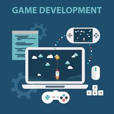
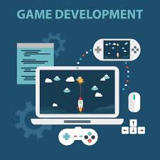

If you starting game development here is three things you should do before starting. First you should chose your game enginge, there are many game engines some are better at 3d and some are better at 2d, you should chose the game engine that fits your needs for your game, I use godot because I like making 2d games and its open source.
The second thing you should do is be careful of only following tutorials and never practicing what you learn, you should not do this because if you only follow tutorials and don't practice you will struggle to make your own projects without a tutorial helping you.
The third thing is that you should not focus on graphics/looks and should first focus on game mechanics because making a game look good with art and sprites can take awhile so when you make a game you should first make the mechnics and make the art look good after.